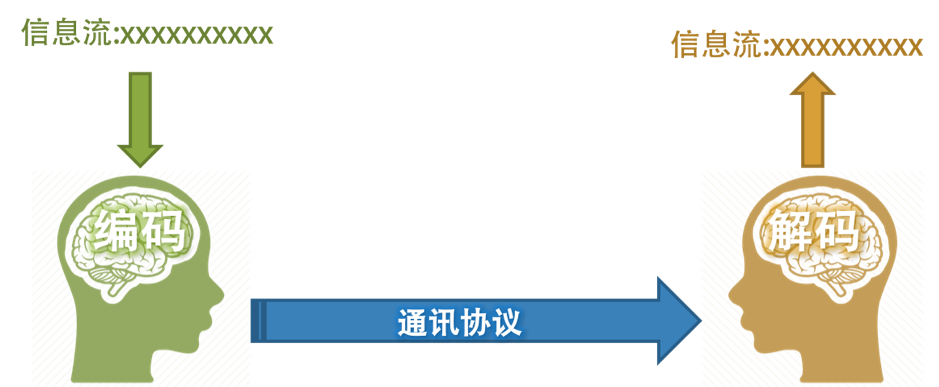
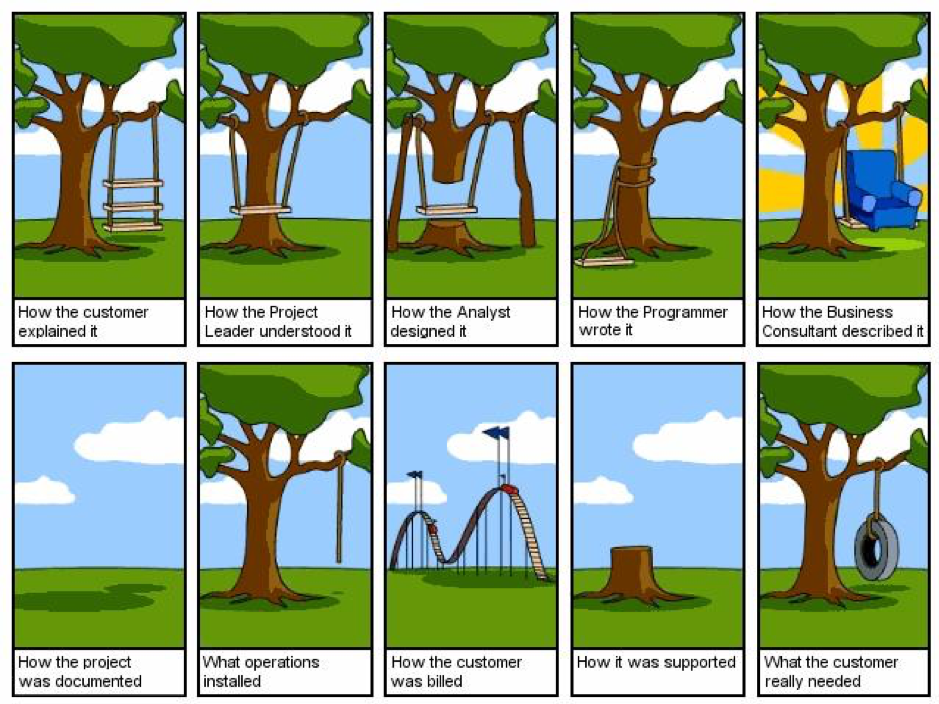

- 000 开篇词 洞悉技术的本质，享受科技的乐趣.md.html
- 001 程序员如何用技术变现（上）.md.html
- 002 程序员如何用技术变现（下）.md.html
- 003 Equifax信息泄露始末.md.html
- 004 从Equifax信息泄露看数据安全.md.html
- 005 何为技术领导力.md.html
- 006 如何拥有技术领导力.md.html
- 007 推荐阅读：每个程序员都该知道的事.md.html
- 008 Go语言，Docker和新技术.md.html
- 009 答疑解惑：渴望、热情和选择.md.html
- 010 如何成为一个大家愿意追随的Leader？.md.html
- 011 程序中的错误处理：错误返回码和异常捕捉.md.html
- 012 程序中的错误处理：异步编程和最佳实践.md.html
- 013 魔数 0x5f3759df.md.html
- 014 推荐阅读：机器学习101.md.html
- 015 时间管理：同扭曲时间的事儿抗争.md.html
- 016 时间管理：投资赚取时间.md.html
- 017 故障处理最佳实践：应对故障.md.html
- 018 故障处理最佳实践：故障改进.md.html
- 019 答疑解惑：我们应该能够识别的表象和本质.md.html
- 020 分布式系统架构的冰与火.md.html
- 021 从亚马逊的实践，谈分布式系统的难点.md.html
- 022 分布式系统的技术栈.md.html
- 023 分布式系统关键技术：全栈监控.md.html
- 024 分布式系统关键技术：服务调度.md.html
- 025 分布式系统关键技术：流量与数据调度.md.html
- 026 洞悉PaaS平台的本质.md.html
- 027 推荐阅读：分布式系统架构经典资料.md.html
- 028 编程范式游记（1）- 起源.md.html
- 029 编程范式游记（2）- 泛型编程.md.html
- 030 编程范式游记（3） - 类型系统和泛型的本质.md.html
- 031 Git协同工作流，你该怎样选.md.html
- 032 推荐阅读：分布式数据调度相关论文.md.html
- 033 编程范式游记（4）- 函数式编程.md.html
- 034 编程范式游记（5）- 修饰器模式.md.html
- 035 编程范式游记（6）- 面向对象编程.md.html
- 036 编程范式游记（7）- 基于原型的编程范式.md.html
- 037 编程范式游记（8）- Go 语言的委托模式.md.html
- 038 编程范式游记（9）- 编程的本质.md.html
- 039 编程范式游记（10）- 逻辑编程范式.md.html
- 040 编程范式游记（11）- 程序世界里的编程范式.md.html
- 041 弹力设计篇之“认识故障和弹力设计”.md.html
- 042 弹力设计篇之“隔离设计”.md.html
- 043 弹力设计篇之“异步通讯设计”.md.html
- 044 弹力设计篇之“幂等性设计”.md.html
- 045 弹力设计篇之“服务的状态”.md.html
- 046 弹力设计篇之“补偿事务”.md.html
- 047 弹力设计篇之“重试设计”.md.html
- 048 弹力设计篇之“熔断设计”.md.html
- 049 弹力设计篇之“限流设计”.md.html
- 050 弹力设计篇之“降级设计”.md.html
- 051 弹力设计篇之“弹力设计总结”.md.html
- 052 区块链技术 - 区块链的革命性及技术概要.md.html
- 053 区块链技术 - 区块链技术细节 - 哈希算法.md.html
- 054 区块链技术 - 区块链技术细节 - 加密和挖矿.md.html
- 055 区块链技术 - 去中心化的共识机制.md.html
- 056 区块链技术 - 智能合约.md.html
- 057 区块链技术 - 传统金融和虚拟货币.md.html
- 058 管理设计篇之分布式锁.md.html
- 059 管理设计篇之配置中心.md.html
- 060 管理设计篇之边车模式.md.html
- 061 管理设计篇之服务网格.md.html
- 062 管理设计篇之网关模式.md.html
- 063 管理设计篇之部署升级策略.md.html
- 064 性能设计篇之缓存.md.html
- 065 性能设计篇之异步处理.md.html
- 066 性能设计篇之数据库扩展.md.html
- 067 性能设计篇之秒杀.md.html
- 068 性能设计篇之边缘计算.md.html
- 069 程序员练级攻略（2018）：开篇词.md.html
- 070 程序员练级攻略（2018）：零基础启蒙.md.html
- 071 程序员练级攻略（2018）：正式入门.md.html
- 072 程序员练级攻略（2018）：程序员修养.md.html
- 073 程序员练级攻略（2018）：编程语言.md.html
- 074 程序员练级攻略：理论学科.md.html
- 075 程序员练级攻略（2018）：系统知识.md.html
- 076 程序员练级攻略（2018）：软件设计.md.html
- 077 程序员练级攻略（2018）：Linux系统、内存和网络.md.html
- 078 程序员练级攻略（2018）：异步IO模型和Lock-Free编程.md.html
- 079 程序员练级攻略（2018）：Java底层知识.md.html
- 080 程序员练级攻略（2018）：数据库.md.html
- 081 程序员练级攻略（2018）：分布式架构入门.md.html
- 082 程序员练级攻略（2018）：分布式架构经典图书和论文.md.html
- 083 程序员练级攻略（2018）：分布式架构工程设计.md.html
- 084 程序员练级攻略（2018）：微服务.md.html
- 085 程序员练级攻略（2018）：容器化和自动化运维.md.html
- 086 程序员练级攻略（2018）：机器学习和人工智能.md.html
- 087 程序员练级攻略（2018）：前端基础和底层原理.md.html
- 088 程序员练级攻略（2018）：前端性能优化和框架.md.html
- 089 程序员练级攻略（2018）：UIUX设计.md.html
- 090 程序员练级攻略（2018）：技术资源集散地.md.html
- 091 程序员面试攻略：面试前的准备.md.html
- 092 程序员面试攻略：面试中的技巧.md.html
- 093 程序员面试攻略：面试风格.md.html
- 094 程序员面试攻略：实力才是王中王.md.html
- 095 高效学习：端正学习态度.md.html
- 096 高效学习：源头、原理和知识地图.md.html
- 097 高效学习：深度，归纳和坚持实践.md.html
- 098 高效学习：如何学习和阅读代码.md.html
- 099 高效学习：面对枯燥和量大的知识.md.html
- 100 高效沟通：Talk和Code同等重要.md.html
- 101 高效沟通：沟通阻碍和应对方法.md.html
- 102 高效沟通：沟通方式及技巧.md.html
- 103 高效沟通：沟通技术.md.html
- 104 高效沟通：好老板要善于提问.md.html
- 105 高效沟通：好好说话的艺术.md.html
- 106 加餐 谈谈我的“三观”.md.html
- 107 结束语 业精于勤，行成于思.md.html
100 高效沟通：Talk和Code同等重要
Talk is cheap，show me the code，是我们技术人常说的一句话，也是技术社区中经常用的一句话。这句话的意思是，那些光说不练的人说一句是很简单的，而写代码的人则会为一句话付出很多很多的精力，其表明，一个看上去再简单的东西，用一行一行的代码实现起来，并能让其运转起来也是一件很复杂很辛苦的事。说得容易，做起来难！
这句话是 Linus 说的，也是我引入到中文社区的，然而，逐渐地，大众对这句话的解读开始有点变味了，走向了另外一个极端——他们觉得代码才是最重要的，甚至其中有些人开始觉得真正的技术人员是只用代码说话的！
似乎，这个世界上总是会有一些人，当他们看到一个观点的时候，在他们的脑袋里只有两个答案，一个是 true，如果不是 true，那就是 false。就好像只要一个人犯了个错误，这个人就是一个不折不扣的大坏蛋，如果一个人是个好人，那他要在所有的地方都是优秀完美的。
对于技术人员来说，其实，Talk 和 Code 是同样重要的， Talk 是人对人说的话，而 Code 也不仅仅只是人对机器说的话，也更是另外一种人对人说的话（因为 Code 需要易读和易维护，就需要让人读懂）。可见，无论是 Code 还是 Talk 其实都是要和人交流的，Code 是间接交流，Talk 则是直接交流。在公司中工作，需要了解公司的意图，与团队一起做项目，调研客户的需求，设计出用户易操作的界面……你会慢慢地发现，其实，Talk 并不 cheap，而 Code 才是其中比较 cheap 的（注：这是站在了另外一个角度）。
一个好的程序员，需要有好的学习能力，这样你才能成为技术专家，但是，你还要有好的沟通能力，不然，你的技术能力完全发挥不出来。就像一棵大树一样，学习能力能让你的根越扎越深，无论遇到什么狂风暴雨，你都可以屹立不倒，而沟通能力则是树杆和枝叶，它们能让你伸展到更高更远的天空。
所以，与人沟通是一项非常重要的软技能，我们应该刻意训练和培养自己这方面的能力。今天我们就来聊聊“技术人如何高效沟通”这一话题。我会分享很多我的工作经验，以及我这么多年来积累和总结的一些沟通技巧。它们在我的工作和生活中都起到了至关重要的作用，希望同样能给你一些启发。
我特别想对技术人员强调一下我的观点：有效的沟通是事业成功的必要条件。不管你的目标是成为一名卓越的管理者，还是成为某个领域的技术牛人，你都应该提高自己的沟通能力。
沟通的原理和问题
想要获得高效的沟通，我们首先需要知道，什么是沟通以及其背后的原理。简单来说，沟通是指运用语言、文字或一些特定的非语言行为（面部表情、肢体动作等），把自己的想法、要求、信息等内容传递给对方。而沟通的原理跟计算机之间的通信有些类似。我在大脑里面将要表达的内容根据通信协议（比如中文）进行编码，发送出来，你接收到中文信息，但它表达的是什么意思呢？这时就需要去解码。
然而，我们日常生活中经常出现的一种情况是，我这句话是这个意思，但却被对方理解为其他意思，即“说者无心，听者有意”。究其原因，其实是因为我们每个人的编码器和解码器完全不匹配造成的，这也是沟通中经常出现的问题。

那我们该怎样解决这个问题呢？我们来想象一下，在计算机世界中，遇到这个问题都是怎样解决呢？也就是出现编码器和解码器不一样的情况，怎么办？我们通常可以通过一些约定来解决这个问题。对应到沟通这个场景下，“约定”仍然是个好办法。我在一些国外公司工作过，基本上入职之后的第一件事都是，被告知公司里面有很多术语，在描述对应的事物时要用统一的术语。就好像江湖中的黑话一样，这就是我们的通讯协议的标准化，这样可以简化很多沟通的成本。
此外，反馈也是个很好的方式，你把你理解的东西说给我听。如果有偏差，我再给你解释一下，直到双方达成共识。这就好像 TCP 协议一样，为了保证对方收到了，就需要接收方发出确认包。因为发送方和接收方的解码器不一样，所以，接收方把其解码的信息再编码后传回来，发送方这边再解码看看是不是同样的数据，于是就可以保证编码器和解码器中的信息是一致的了。这又叫“双工通信”（你看，我开始用到术语了，文科生听不懂了，嘿嘿），不要小看“双工”这事儿，它是有效沟通的前提。反之，则会有鸡同鸭讲、对牛弹琴的意味了。
当然，就算是我们统一术语并且有反馈机制，人与人的沟通依然还是有很多的问题。最大的一个问题就是，我们的成长背景不一样，经历不一样，知识储备不一样，所以对相同事物的理解难免会存在一定的偏差。
日常沟通可能还好一点，但涉及到一些专业领域中术语的表达，沟通不畅的问题会变得更为严重。比如，我在讲一些计算机术语，而那些没有计算机方面知识储备的人，是完全听不懂的。即便他能听懂我说的每一个字，但还是理解不了我在说什么。所以，这个世界上有一些“教 6 岁孩子学习 XXX”的文章，这种方式其实就是想把一些高级的知识通过低级知识来表达出来，以便可以让小孩子都能听懂，也就是所谓的科普。相信我，如果你能做到这点，你一定是这个行业的专家级人物了。
就像那本相当经典的图书《从一到无穷大》，其实它在讲的是高阶物理知识，其中有非常难以理解的爱因斯坦相对论，然而这本书却被作者写成了中学生都可以读懂的科普书。能把深奥的物理知识写得这么通俗易懂，只有真正的专家才可以做到。这本书的作者是：乔治·伽莫夫（George Gamow）美籍俄裔物理学家、宇宙学家、科普作家，热大爆炸宇宙学模型的创立者，也是最早提出遗传密码模型的人。
信息在传递中的损失也不容忽视。相信很多人都玩过一个类似“传话”的游戏：一个人将一句话偷偷说给站在队首的人听，然后他把自己听到的内容传给第二个人，依次传下去，直到队尾。最后由队尾的人大声说出听到的内容。很多时候这个最终的结果都会令人哭笑不得，因为在传递的过程中，最初的信息已经完全变了样子。
因为，每一次信息的传递都是由不同的编码器和解码器完成的，而传递信息所使用的协议（人类的语言）是很难准确地携带所有的信息的，所以每一次编码和解码都会有信息的丢失和失真。还有一些人会在其中有意无意地“加油添醋”，甚至加入“谣言”，导致整个信息传递过程被黑！
与之对应的，如果一个公司层级越深，那么执行力一定越差。为什么呢？因为老大的“旨意”一层一层往下传递，传到最下面其实信息早就变了样儿。基本的模式都是，我听我的领导讲了，自己理解了一下，然后对下面的人讲。经常会出现这样的情况，最高层老板讲，我要的是这个，但最终员工交付的却是另外一个东西。信息传递的渠道越多，损失也会越大。所以，会有下面这张经典的图。

另一方面，在职场里，出于各种各样的原因，有些领导不想直接把自己上级的话对自己下属去讲。一方面，要把其变成下属能理解的语言去讲，他们觉得这样会更有效率，下属不用管公司或是别人要什么，只管好自己要干什么就好。
而另一方面也有政治上的原因，他们把一些信息阻断了，甚至修改了，以此来达到控制别人的目的。通常来说，只要有等级存在，职场中的管理层就会对上粉过饰非，对下盘剥利诱，这就是职场的生存法则，尤其是大公司更是这样。所以，公司大了后，如果管理跟不上，听之任之，上层和下层脱节基本上来说是必然的。
对我而言，不管以前做公司管理层，还是现在经营自己的公司，我一直都秉承的原则是，将信息源头的信息原模原样分享出去，而不是我“嚼过的”。因为，我认为后者的信息损失会非常大，而且产生的不良后果也会很大。真正的团队管理，不应该屏蔽信息，信息应该是公开透明的，因为我相信团队成熟到可以面对各种信息，并且是可以一起找解一起找出路的。
小结
总结一下今天的内容。在文章伊始我先强调了我的观点，Talk 和 code 同样重要，有效的沟通是你事业成功的必要条件。随后介绍了何为沟通及其背后的原理。我认为，沟通原理跟计算机世界中的通信原理有些类似。由于编码器和解码器的不同，会造成理解的偏差。这个问题可以通过约定和反馈来解决，也就是要先达成共识，然后基于共识来进行沟通。最后我阐述了一些沟通问题，以及应对这些问题的方法。